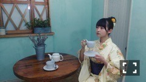

| 2015/08 12 Wed | 傾く熱視線。659回目 |

はぁい
毎日暑いですね！
名古屋3公演が終わりました。
来てくださったみなさん
ありがとうございます＼(^o^)／
お客さんの熱気に負けず
相変わらず汗かきまくりです！
真洋と走り回ったりして
楽しかったな〜
サプライズで13枚目の
リリース日が発表されました。
10月28日になります。
次は広島公演！
今は身体を休めつつも、
いろいろと撮影してます！
久しぶりに友達とごはん行ったり、
ちょっと買い物もできた(´◡͐`)
NOGIROOMで
井上小百合からお手紙頂きました。
照れ臭かったなあ
ありがとうよ、さゆ(T . T)
しゃべらなくても大丈夫。
自分をよくわかっている人。
刺激を受けるメンバー。
最近だとツアー中ホテルで、
内容のない話をし続ける私を
無視せず対応してくれました。
やさしいです。
あと、勢いに乗って
ある約束をしました！
楽しみいo(^▽^)o

◎Real Sound
中元日芽香 伊藤万理華インタビュー
日芽香との関係と今思うこと、
そのまま載っています。
何が正しいとかないけど
思ってること、読んでほしい。
私たちはこう思ってる。
よろしくお願いします！
◎別冊CD&DLでーた
My GIRL vol.5

浴衣 de カフェ
洋と和の融合、
このバランスだいすきです。
直前まで迷って
この黄色の浴衣にした結果
カフェの雰囲気とマッチして
最高でした＼(^o^)／
ぜひチェックして涼んでください。
インタビューも読んでね！

◎CUTiE 最終号
飛鳥が表紙です。
飛鳥は、CUTiE専属モデルを卒業して、
Sweetレギュラーモデルになります。
おめでたい！そして17歳。
どんどん私服が洗練されています。
"万理華の脳内"六回目
あえて最終回にはしませんでした。
CUTiE、お世話になりました！
最後までラブリーです。
ラブリーウイルス。
◎TopYell 未央奈と対談
◎EX大衆 生駒と対談
ふたりとも不思議で良き距離感。
なんとなくですが、
生駒とはいろいろ話したいなあ
と思った対談でした。
お洋服のこと意外もね。
もうすぐ成人だぜ！
8月22日 POKERFACE
8月28日 装苑
8月31日 BUBKA
8月、
たくさんの雑誌に掲載されます。
とても嬉しいです！
私らしく頑張ろう。
まりか
コメント(524)
2015/08/12 23:00